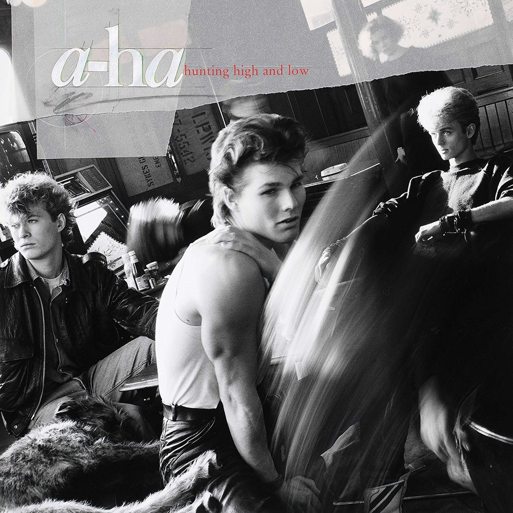
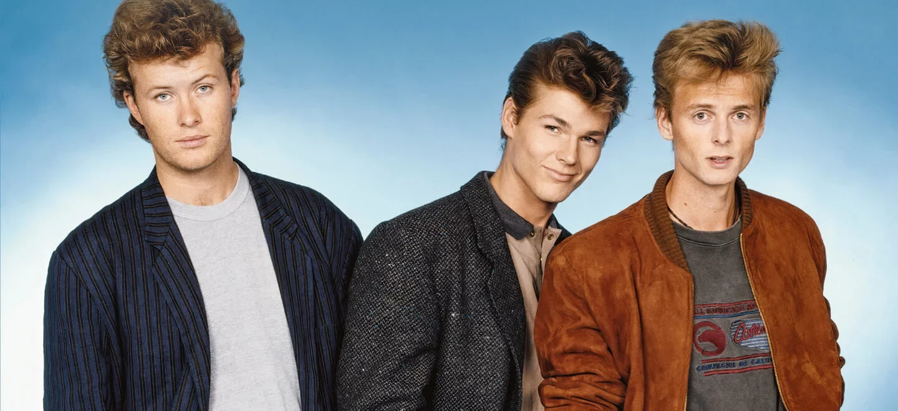

안녕하세요, 라보엠입니다.
오늘은 전 세계 팝 음악사를 새로 쓴 노르웨이 밴드 a-ha의 시그니처 곡, ‘Take On Me’를 소개하겠습니다. 1985년 발매된 이 곡은 감각적인 신스 리프와 독보적인 음악적 스타일, 그리고 모든 음악팬들의 기억에 남은 전설의 뮤직비디오로 지금까지도 꾸준히 사랑받고 있습니다. 오늘은 이 명곡의 탄생 과정, 음악적 특징, 그리고 남다른 미학에 대한 이야기를 나눠보겠습니다.

Take on me 전설의 시작 – 오랜 집념과 끊임없는 도전
‘Take On Me’는 초반부터 순탄했던 곡이 아닙니다. a-ha는 본래 ‘Bridges’라는 이름의 밴드로 활동했으며, 10대 시절 밴드 멤버였던 Magne Furuholmen이 우연히 만든 신스 리프에서 시작됐죠. 처음에는 곡이 너무 ‘껌 광고 같고’ 팝적인 느낌이 강하다고 생각해 박진감 넘치는 펑크 버전으로 시도하기도 했습니다. 그러나 밴드 멤버들과 협업하며 수년간 무수한 데모와 편곡을 거쳐 지금의 형태로 완성되었습니다. 이 곡은 무려 세 차례 싱글로 발표됐지만 처음 두 번의 발매에서는 크게 주목받지 못했습니다. 마지막 발매에 이르러 Alan Tarney 프로듀싱의 새로운 믹스와, 혁신적인 뮤직비디오가 힘을 보태며 마침내 전 세계 차트 정상에 올랐습니다.
‘Take On Me’ 하면 빼놓을 수 없는 것이 바로 혁신적 애니메이션 뮤직비디오입니다. 스티브 배런 감독이 만화책과 실사 촬영을 획기적으로 결합한 ‘로토스코핑’ 기법을 도입해, 흑연 스케치로 그려진 세계와 현실 세계가 자연스럽게 연결됩니다. 6개월의 제작 끝에 완성된 이 영상은 MTV 비디오 뮤직 어워드 6관왕, 유튜브 조회수 10억 돌파라는 대기록을 세우며 곡의 신드롬을 확장시켰습니다.

이 곡은 a-ha에게 전 세계적 성공을 안겼을 뿐 아니라, 이후 수십 년 동안 수없이 많은 커버와 샘플링, 패러디 등으로 문화적 아이콘이 되었습니다. 1985년 미국 빌보드 핫100 1위, 영국 차트 2위, 12개국 차트 정상 등 기록을 세웠으며, 지금도 80년대 신스팝의 대명사로 남아 있습니다. 세련된 사운드와 노르웨이 특유의 몽환적 감성이 어우러진 ‘Take On Me’는, 팝음악의 경계를 넓힌 영원한 명곡입니다.
차별화된 음악성의 힘
‘Take On Me’의 가장 강력한 아이덴티티는 매혹적인 신디사이저 리프와 169bpm의 빠른 템포, 어쿠스틱 기타·키보드·드럼이 조화롭게 어우러진 편곡에 있습니다. 곡의 전개는 쫀쫀하게 짜인 구성이며, Morten Harket의 2옥타브를 넘는 고음역대 보컬이 감정의 절정을 이끌어냅니다. 특히 후렴구에서 터지는 “Take on me, take me on, I’ll be gone ~ in a day or two”는 팝 역사상 가장 인상적인 클라이맥스 중 하나라고 할 수 있습니다.
음악적 포인트
- 반복적이지만 강렬한 신스 리프
- 청량한 드럼머신 사운드와 어쿠스틱 악기 조화
- 세련된 팝 멜로디와 감성적인 보컬
- 감정의 고조를 이끄는 후렴구의 고음 대폭발
Take on me 가사, 그리고 시대의 메시지
이 노래의 가사는 풋풋한 사랑 고백과, 설렘과 망설임 사이를 오가는 청춘의 감정선을 담담하지만 서정적으로 풀어냅니다.
- “Talking away, I don’t know what I’m to say, I’ll say it anyway…”
- “Take on me, take me on, I’ll be gone in a day or two…”
반복되는 후렴은 사랑에 뛰어들 용기와, 기회가 너무 오래 머물지 않는 ‘순간의 소중함’을 일깨워줍니다. 조화로운 멜로디와 어우러진 오묘한 가사는, 사랑뿐 아니라 인생의 선택 앞에서 누구나 경험하는 망설임과 용기를 응원합니다.
맺음말
‘Take On Me’는 시간을 초월해 사랑받는 팝의 전설입니다. 흡입력 있는 멜로디, 감각적인 보컬, 혁신적인 뮤직비디오, 그리고 청춘의 익숙한 감정을 울리는 가사까지. 오늘도 이 곡을 들으며, 다시 한 번 자신의 순간과 용기를 떠올려보는 시간을 가져보는 건 어떨까요? 이 노래가 여러분의 일상에 작은 설렘과 위로를 전해주길 바랍니다.